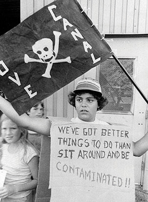
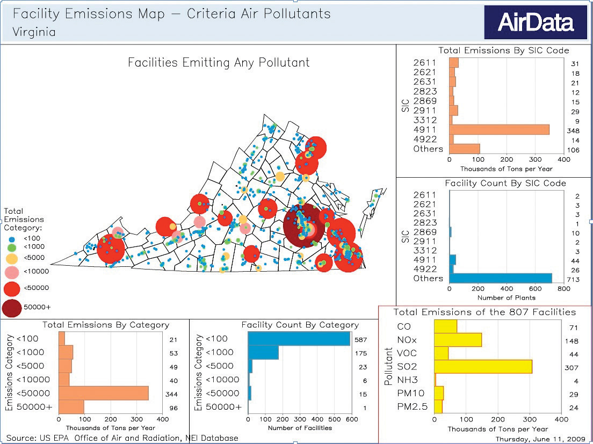
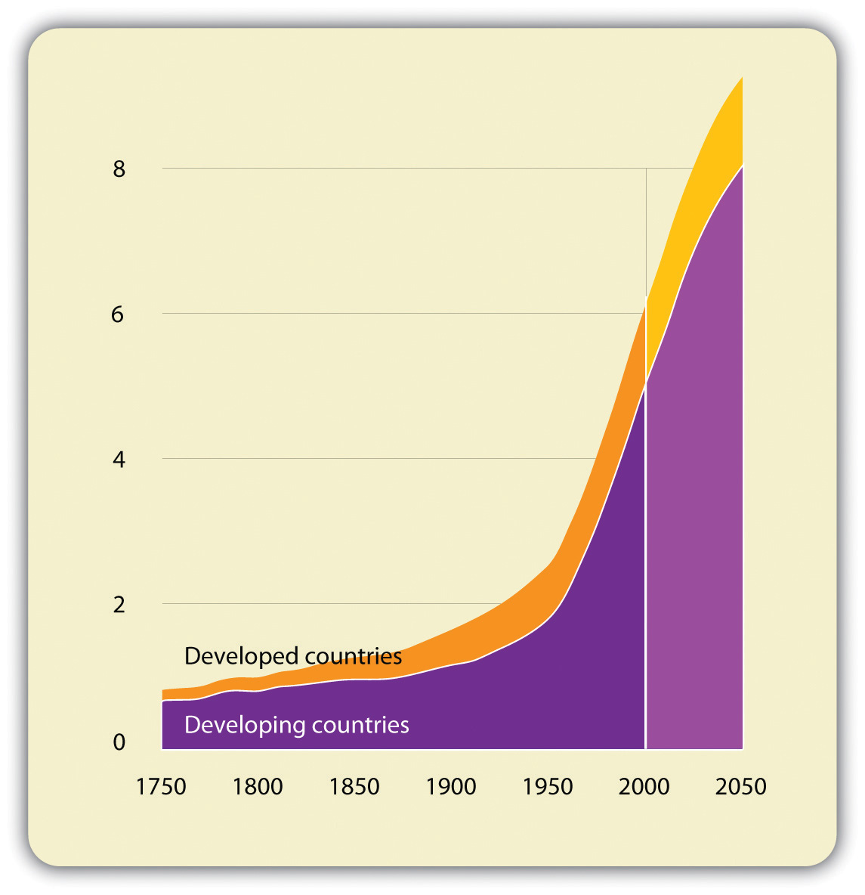

Sustainability innovations, currently driven by a subset of today’s entrepreneurial actors, represent the new generation of business responses to health, ecological, and social concerns. The entrepreneurial innovations we will discuss in this book reflect emerging scientific knowledge, widening public concern, and government regulation directed toward a cleaner economy. The US roots of today’s sustainability innovations go back to the 1960s, when health and environmental problems became considerably more visible. By 1970, the issues had intensified such that both government and business had to address the growing public worries. The US environmental regulatory framework that emerged in the 1970s was a response to growing empirical evidence that the post–World War II design of industrial activity was an increasing threat to human health and environmental system functioning.
We must keep in mind, however, that industrialization and in particular the commercial system that emerged post–World War II delivered considerable advantages to a global population. To state the obvious: there have been profoundly important advances in the human condition as a consequence of industrialization. In most countries, life spans have been extended, infant mortality dramatically reduced, and diseases conquered. Remarkable technological advances have made our lives healthier, extended education, and made us materially more comfortable. Communication advances have tied people together into a single global community, able to connect to each other and advance the common good in ways that were unimaginable a short time ago. Furthermore, wealth creation activity by business and the resulting rise in living standards have brought millions of people out of poverty. It is this creative capacity, our positive track record, and a well-founded faith in our ability to learn, adapt, and evolve toward more beneficial methods of value creation that form the platform for the innovative changes discussed in this text. Human beings are adept at solving problems, and problems represent system feedback that can inform future action. Therefore, we begin this discussion with a literal and symbolic feedback loop presented to the American public in the 1960s.
Widespread public awareness about environmental issues originated with the publication of the book Silent SpringThe book Silent Spring was a direct challenge to the chemical industry and to the prevalent societal optimism toward chemicals. Written by biologist Rachel Carson in 1962, it argued that the spraying of the synthetic pesticide DDT was causing a dramatic decline in bird populations and poisoning the food chain and thus humans. by Rachel Carson in 1962. Carson, a biologist, argued that the spraying of the synthetic pesticide dichlorodiphenyltrichloroethane (DDT) was causing a dramatic decline in bird populations, poisoning the food chain, and thus ultimately harming humans. Similar to Upton Sinclair’s 1906 book The Jungle and its exposé of the shocking conditions in the American meatpacking industry, Silent Spring was a dramatic challenge to the chemical industry and to the prevalent societal optimism toward technology and post–World War II chemical use. Its publication ignited a firestorm of publicity and controversy. Predictably, the chemical industry reacted quickly and strongly to the book’s threat and was critical of Carson and her ideas. In an article titled “Nature Is for the Birds,” industry journal Chemical Week described organic farmers and those opposed to chemical pesticides as “a motley lot” ranging from “superstition-ridden illiterates to educated scientists, from cultists to relatively reasonable men and women” and strongly suggesting Carson’s claims were unwarranted.“Nature Is for the Birds,” Chemical Week, July 28, 1962, 5, quoted in Andrew J. Hoffman, From Heresy to Dogma: An Institutional History of Corporate Environmentalism (San Francisco: New Lexington Press, 1997), 51. Chemical giant Monsanto responded directly to Carson by publishing a mocking parody of Silent Spring titled The Desolate Year. The book, with a “prose and format similar to Carson’s…described a small town beset by cholera and malaria and unable to produce adequate crops because it lacked the chemical pesticides necessary to ward off harmful pests.”Andrew J. Hoffman, From Heresy to Dogma: An Institutional History of Corporate Environmentalism (San Francisco: New Lexington Press, 1997), 51. Despite industry’s counteroffensive, President Kennedy, in part responding to Carson’s book, appointed a special panel to study pesticides. The panel’s findings supported her thesis.Andrew J. Hoffman, From Heresy to Dogma: An Institutional History of Corporate Environmentalism (San Francisco: New Lexington Press, 1997), 57. However, it wasn’t until 1972 that the government ended the use of DDT.A ban on DDT use went into effect in December 1972 in the United States. See US Environmental Protection Agency, “DDT Ban Takes Effect,” news release, December 31, 1972, accessed April 19, 2011, http://www.epa.gov/history/topics/ddt/01.htm.
Figure 1.1 "DDT Accumulation in the Food Chain" shows how toxins concentrate in the food chain. Humans, as consumers of fish and other animals that accumulate DDT, are at the top of the food chain and therefore can receive particularly high levels of the chemical. Even after developed countries had banned DDT for decades, in the early part of the twenty-first century the World Health Organization reapproved DDT use to prevent malaria in less developed countries. Lives were saved, yet trade-offs were necessary. Epidemiologists continue to associate high concentration levels with breast cancer and negative effects on the neurobehavioral development of children.Brenda Eskenazi, interviewed by Steve Curwood, “Goodbye DDT,” Living on Earth, May 8, 2009, accessed November 29, 2010, http://www.loe.org/shows/segments.htm?programID=09-P13-00019&segmentID=3; Theo Colburn, Frederick S. vom Saal, and Ana M. Soto, “Developmental Effects of Endocrine-Disrupting Chemicals in Wildlife and Humans,” Environmental Health Perspectives 101, no. 5 (October 1993): 378–84, accessed November 24, 2010, http://www.pubmedcentral.nih.gov/articlerender.fcgi?artid=1519860. DDT, along with several other chemicals used as pesticides, is suspected endocrine disruptors; the concern is not just with levels of a given toxin but also with the interactive effects of multiple synthetic chemicals accumulating in animals, including humans.
Figure 1.1 DDT Accumulation in the Food Chain

DDT levels, shown in nanograms per gram of body fat for animals in Lake Kariba in Zimbabwe, accumulate in the food chain.
Source: Håkan Berg, Martina Kiibus, and Nils Kautsky, “DDT and Other Insecticides in the Lake Kariba Ecosystem, Zimbabwe,” Ambio 21 (November 1992): 444–50.
Throughout the 1960s, well-publicized news stories were adding momentum to the call for comprehensive federal environmental legislation. The nation’s air quality had deteriorated rapidly, and in 1963 high concentrations of air pollutants in New York City caused approximately three hundred deaths and thousands of injuries.G. Tyler Miller and Scott Spoolman, Living in the Environment: Principles, Connections, and Solutions, 16th ed. (Belmont, CA: Brooks/Cole, 2009), 535. At the same time, cities like Los Angeles, Chattanooga, and Pittsburgh had become infamous for their dense smog. Polluted urban areas, once considered unpleasant and unattractive inconveniences that accompanied growth and job creation, were by the 1960s definitively connected by empirical studies to a host of respiratory problems.
Urban air quality was not the only concern. Questions were also being raised about the safety of drinking water and food supplies that were dependent on freshwater resources. In 1964, over a million dead fish washed up on the banks of the Mississippi River, threatening the water supplies of nearby towns. The source of the fish kill was traced to pesticide leaks, specifically endrin, which was manufactured by Velsicol.Andrew J. Hoffman, From Heresy to Dogma: An Institutional History of Corporate Environmentalism (San Francisco: New Lexington Press, 1997), 52. Several other instances of polluted waterways added to the public’s awareness of the deterioration of the nation’s rivers, streams, and lakes and put pressure on legislators to take action. In the mid-1960s, foam from nonbiodegradable cleansers and laundry detergents began to appear in rivers and creeks. By the late 1960s, Lake Erie was so heavily polluted that millions of fish died and many of the beaches along the lake had to be closed.G. Tyler Miller and Scott Spoolman, Living in the Environment: Principles, Connections, and Solutions, 16th ed. (Belmont, CA: Brooks/Cole, 2009), 535. On June 22, 1969, the seemingly impossible occurred in Ohio when the Cuyahoga River, which empties into Lake Erie, caught fire, capturing the nation’s attention. However, it was not the first time; the river had burst into flame multiple times since 1968.
Chocolate-brown, oily, bubbling with subsurface gases, it oozes rather than flows. “Anyone who falls into the Cuyahoga does not drown,” Cleveland’s citizens joke grimly. “He decays.” The Federal Water Pollution Control Administration dryly notes: “The lower Cuyahoga has no visible life, not even low forms such as leeches and sludge worms that usually thrive on wastes.” It is also—literally—a fire hazard. A few weeks ago, the oil-slicked river burst into flames and burned with such intensity that two railroad bridges spanning it were nearly destroyed. “What a terrible reflection on our city,” said Cleveland Mayor Carl Stokes sadly.“America’s Sewage System and the Price of Optimism,” Time, August 1, 1969, accessed March 7, 2011, http://www.time.com/time/magazine/article/0,9171,901182,00.html#ixzz19KSrUirj.
Figure 1.2 Earth as Photographed from Outer Space“Apollo 8 hand-held Hasselblad photograph of a half illuminated Earth taken on 24 December 1968 as the spacecraft returned from the first manned orbit of the Moon. The evening terminator crosses Australia, towards the bottom. India can be seen at upper left. The sun is reflecting off the Indian ocean. The Earth is 12,740 km in diameter, north is at about 1:00. (Apollo 8, AS08-15-2561)”; NASA, “Earth—Apollo 8,” Catalog of Spaceborne Imaging, accessed March 7, 2011, http://nssdc.gsfc.nasa.gov/imgcat/html/object_page/a08_h_15_2561.html.

Adding to air and drinking water concerns was the growing problem of coastal pollution from human activity. Pollution from offshore oil drilling gained national attention in 1969 when a Union Oil Company offshore platform near Santa Barbara, California, punctured an uncharted fissure, releasing an estimated 3.25 million gallons of thick crude oil into the ocean. Although neither the first nor the worst oil spill on record, the accident coated the entire coastline of the city of Santa Barbara with oil, along with most of the coasts of Ventura and Santa Barbara counties. The incident received national media attention given the beautiful coastal location of the spill. In response to the spill, a local environmental group calling itself Get Oil Out (GOO) collected 110,000 signatures on a petition to the government to stop further offshore drilling. President Nixon, a resident of California, complied and imposed a temporary moratorium on California offshore development.Andrew J. Hoffman, From Heresy to Dogma: An Institutional History of Corporate Environmentalism (San Francisco: New Lexington Press, 1997), 57–58.
Influenced by these events and the proliferation of environmental news stories and public discourse, citizens of industrialized countries had begun to shift their perceptions about the larger physical world. Several influential books and articles introduced to the general public the concept of a finite world. Economist Kenneth Boulding, in his 1966 essay “The Economics of the Coming Spaceship Earth,” coined the metaphors of “spaceship EarthCoined by Kenneth Boulding in his 1966 essay “The Economics of the Coming Spaceship Earth,” this term suggests that the earth is a closed system with finite resources and capacities.” and “spaceman economy” to emphasize that the earth was a closed system and that the economy must therefore focus not on “production and consumption at all, but the nature, extent, quality, and complexity of the total capital stock.”See Kenneth E. Boulding, “The Economics of the Coming Spaceship Earth,” in Environmental Quality in a Growing Economy, ed. Henry Jarrett (Baltimore: Johns Hopkins University Press, 1966), 3–14. Paul Ehrlich, in the follow-up to his 1968 best seller The Population Bomb, borrowed Boulding’s metaphor in his 1971 book How to Be a Survivor to argue that in a closed system, exponential population growth and resource consumption would breach the carrying capacity of nature, assuring misery for all passengers aboard the “spaceship.”Philip Shabecoff, A Fierce Green Fire: The American Environmental Movement (New York: Hill & Wang, 1993), 95–96. Garrett Hardin’s now famous essay, “The Tragedy of the Commons,” was published in the prestigious journal Science in December 1968.Kenneth E. Boulding, “The Economics of the Coming Spaceship Earth,” in Valuing the Earth, Economics, Ecology, Ethics, ed. Herman Daly and Kenneth Townsend (Cambridge, MA: MIT Press, 1993), 297–309; Paul Ehrlich, The Population Bomb (New York: Ballantine Books, 1968); Paul Ehrlich, How to Be a Survivor (New York: Ballantine Books, 1975). It emphasized the need for new solutions to problems not easily addressed by technology, referring to pollution that involved public commons such as the air, water, soil, and oceans. These commonly used resources are shared in terms of access, but no single person or institution has formal responsibility for their protection.
Figure 1.3 Blue Marble

This image shows South America from September 2004.
Source: NASA’s Earth Observatory, “BlueMarble,” accessed March 7, 2011, http://earthobservatory.nasa .gov/Features/BlueMarble.
Another symbolic turning point came in 1969 during the Apollo 11 mission, when the first photograph of the earth was taken from outer space. The image became an icon for the environmental movement. During that time period and subsequently, quotations proliferated about the new relationship between humans and their planetary home. In a speech at San Fernando Valley State College on September 26, 1966, the vice president of the United States Hubert H. Humphrey said, “As we begin to comprehend that the earth itself is a kind of manned spaceship hurtling through the infinity of space—it will seem increasingly absurd that we have not better organized the life of the human family.” In the December 23, 1968, edition of Newsweek, Frank Borman, commander of Apollo 8, said, “When you’re finally up at the moon looking back on earth, all those differences and nationalistic traits are pretty well going to blend, and you’re going to get a concept that maybe this really is one world and why the hell can’t we learn to live together like decent people.”
In response to strong public support for environmental protection, newly elected president Nixon, in his 1970 State of the Union address, declared that the dawning decade of the 1970s “absolutely must be the years when America pays its debt to the past by reclaiming the purity of its air, its waters and our living environment. It is literally now or never.”Richard Nixon Foundation, “RN In ‘70—Launching the Decade of the Environment,” The New Nixon Blog, January 1, 2010, accessed March 23, 2011, http://blog.nixonfoundation.org/2010/01/rn-in-70-the-decade-of-the-environment. Nixon signed into law several pieces of legislation that serve as the regulatory foundation for environmental protection today. On January 1, 1970, he approved the National Environmental Policy Act (NEPA)Signed into law January 1, 1970, the act is the cornerstone of environmental policy and law in the United States. NEPA states that it is the responsibility of the federal government to improve and coordinate federal plans, functions, programs, and resources such that the present generation acts as trustee of the environment for succeeding generations. In doing so, NEPA requires federal agencies to evaluate the environmental impact of an activity before it is undertaken. Further, NEPA established the Environmental Protection Agency., the cornerstone of environmental policy and law in the United States. NEPA states that it is the responsibility of the federal government to “use all practicable means…to improve and coordinate federal plans, functions, programs and resources to the end that the Nation may…fulfill the responsibilities of each generation as trustee of the environment for succeeding generations.”See National Environmental Policy Act of 1969, 42 U.S.C. § 4321–47. GPO Access US Code Online, “42 USC 4331,” January 3, 2007, accessed April 19, 2011, http://frwebgate.access.gpo.gov/cgi-bin/getdoc.cgi?dbname=browse_usc&docid=Cite:+42USC4331, Jan 3, 2007. In doing so, NEPA requires federal agencies to evaluate the environmental impact of an activity before it is undertaken. Furthermore, NEPA established the Environmental Protection Agency (EPA), which consolidated the responsibility for environmental policy and regulatory enforcement at the federal level.
Also in 1970, the modern version of the Clean Air Act (CAA) was passed into law. The CAA set national air quality standards for particulates, sulfur oxides, carbon monoxide, nitrogen oxide, ozone, hydrocarbons, and lead, averaged over different time periods. Two levels of air quality standards were established: primary standards to protect human health, and secondary standards to protect plant and animal life, maintain visibility, and protect buildings. The primary and secondary standards often have been identical in practice. The act also regulated that new stationary sources, such as power plants, set emissions standards, that standards for cars and trucks be established, and required states to develop implementation plans indicating how they would achieve the guidelines set by the act within the allotted time. Congress directed the EPA to establish these standards without consideration of the cost of compliance.Walter A. Rosenbaum, Environmental Politics and Policy, 2nd ed. (Washington, DC: Congressional Quarterly Press, 1991), 180–81.
To raise environmental awareness, Senator Gaylord Nelson of Wisconsin arranged a national teach-in on the environment. Nelson characterized the leading issues of the time as pesticides, herbicides, air pollution, and water pollution, stating, “Everybody around the country saw something going to pot in their local areas, some lovely spot, some lovely stream, some lovely lake you couldn’t swim in anymore.”Gaylord Nelson, interview with Philip Shabecoff, quoted in Philip Shabecoff, A Fierce Green Fire: The American Environmental Movement (New York: Hill & Wang, 1993), 114–15. This educational project, held on April 22, 1970, and organized by Denis Hayes (at the time a twenty-five-year-old Harvard Law student), became the first Earth Day.Hayes organized Earth Day while working for US Senator Gaylord Nelson. Hayes, a Stanford- and Harvard-educated activist with a law degree, helped found Green Seal, one of the most prominent ecolabeling systems in the United States, and directed the National Renewable Energy Laboratory under the Carter administration. On that day, twenty million people in more than two thousand communities participated in educational activities and demonstrations to demand better environmental quality.Tyler Miller Jr., Living in the Environment: Principles, Connections, and Solutions, 9th ed. (Belmont, CA: Wadsworth, 1996), 42. The unprecedented turnout reflected growing public anxiety. Health and safety issues had become increasingly urgent. In New York City, demonstrators on Fifth Avenue held up dead fish to protest the contamination of the Hudson River, and Mayor John Lindsay gave a speech in which he stated “Beyond words like ecology, environment and pollution there is a simple question: do we want to live or die?”Joseph Lelyveld, “Mood Is Joyful Here,” New York Times, April 23, 1970, quoted in Philip Shabecoff, A Fierce Green Fire: The American Environmental Movement (New York: Hill & Wang, 1993), 113. Even children’s books discussed the inability of nature to protect itself against the demands, needs, and perceived excesses associated with economic growth and consumption patterns. The 1971 children’s book The Lorax by Dr. Seuss was a sign of the times with its plea that someone “speak for the trees” that were being cut down at increasing rates worldwide, leaving desolate landscapes and impoverishing people’s lives.
Figure 1.4 The Lorax

The Lorax, written by Dr. Seuss and first published in 1971, illustrated the importance of speaking up on behalf of the environment.
Source: Dr. Seuss, The Lorax (New York: Random House, 1971).
Earth Day fueled public support and momentum for further environmental regulatory protection, and by 1972 the Federal Water Pollution Control Act (FWPCA) had set a goal to eliminate all discharges of pollutants into navigable waters by 1985 and to establish interim water quality standards for the protection of fish, shellfish, wildlife, and recreation interests by July 1, 1983.Walter A. Rosenbaum, Environmental Politics and Policy, 2nd ed. (Washington, DC: Congressional Quarterly Press, 1991), 195–96. Growing concern across the country about the safety of community drinking water supplies culminated in the Safe Drinking Water Act (SDWA) of 1974. This legislation established standards for turbidity, microbiological contaminants, and chemical agents in drinking water.Walter A. Rosenbaum, Environmental Politics and Policy, 2nd ed. (Washington, DC: Congressional Quarterly Press, 1991), 206–7. The Endangered Species Act (ESA) of 1973 forbade the elimination of plant and animal species and “placed a positive duty on the government to act to protect those species from extinction.”Philip Shabecoff, A Fierce Green Fire: The American Environmental Movement (New York: Hill & Wang, 1993), 175. Ten years after the publication of Silent Spring, the Federal Insecticide, Fungicide, and Rodenticide Act (FIFRA) was updated to prohibit or severely limit the use of DDT, aldrin, dieldrin, and many other pesticides. As a result, levels of persistent pesticides measured in human fatty tissues declined from 8 parts per million (ppm) in 1970 to 2 ppm by the mid-1980s.Philip Shabecoff, A Fierce Green Fire: The American Environmental Movement (New York: Hill & Wang, 1993), 46–47.
Pollution control typified the corporate response to environmental regulations from the genesis of the modern regulatory framework in the 1970s through the 1980s. Pollution controlA method to prevent the release of emissions and other by-products into the environment after those wastes have been generated. Typical techniques include scrubbers and filters to trap pollutants. is an end-of-the-pipe strategy that focuses on waste treatment or the filtering of emissions or both. Pollution control strategies assume no change to product design or production methods, only attention to air, solid, and water waste streams at the end of the manufacturing process. This approach can be costly and typically imposes a burden on the company, though it may save expenses in the form of fines levied by regulatory agencies for regulatory noncompliance. Usually pollution control is implemented by companies to comply with regulations and reflects an adversarial relationship between business and government. The causes of this adversarial attitude were revealed in a 1974 survey by the Conference Board—an independent, nonprofit business research organization—that found that few companies viewed pollution control as profitable and none found it to be an opportunity to improve production procedures.Andrew J. Hoffman, From Heresy to Dogma: An Institutional History of Corporate Environmentalism (San Francisco: New Lexington Press, 1997), 81. Hence, from a strictly profit-oriented viewpoint, one that considers neither public reaction to pollution nor potential future liability as affecting the bottom line, pollution control put the company in a “losing” position with respect to environmental protection.
The environmental regulatory structure of the United States at times has forced companies into a pollution control position by mandating specific technologies, setting strict compliance deadlines, and concentrating on cleanup instead of prevention.Michael Porter and Claas van der Linde, “Green and Competitive: Ending the Stalemate,” Harvard Business Review 73, no. 5 (September/October 1995): 120–34. This was evident in a 1986 report by the Office of Technology Assessment (OTA) that found that “over 99 percent of federal and state environmental spending is devoted to controlling pollution after waste is generated. Less than 1 percent is spent to reduce the generation of waste.”US Congress, Office of Technology Assessment, Serious Reduction of Hazardous Waste (Washington, DC: US Government Printing Office, 1986), quoted in Stephan Schmidheiny, with the Business Council for Sustainable Development, Changing Course (Cambridge, MA: MIT Press, 1992), 106. The OTA at that time noted the misplaced emphasis on pollution control in regulation and concluded that existing technologies alone could prevent half of all industrial wastes.Stephan Schmidheiny, with the Business Council for Sustainable Development, Changing Course (Cambridge, MA: MIT Press, 1992), 100.
Economists generally agree that it is better for regulation to require a result rather require a means to accomplishing that result. Requiring pollution control is preferred because it provides an incentive for firms to reduce pollution rather than simply move hazardous materials from one place to another, which does not solve the original problem of waste generation. For example, business researchers Michael Porter and Claas van der Linde draw a distinction between good regulations and bad regulations by whether they encourage innovation and thus enhance competitiveness while simultaneously addressing environmental concerns. Pollution control regulations, they argue, should promote resource productivity but often are written in ways that discourage the risk taking and experimentation that would benefit society and the regulated corporation: “For example, a company that innovates and achieves 95 percent of target emissions reduction while also registering substantial offsetting cost reductions is still 5 percent out of compliance and subject to liability. On the other hand, regulators would reward it for adopting safe but expensive secondary treatment.”Michael Porter and Claas van der Linde, “Green and Competitive: Ending the Stalemate,” Harvard Business Review 73, no. 5 (September/October 1995): 120–34. Regulations that discouraged innovation and mandated the end-of-the-pipe mind-set that was common among regulators and industry in the 1970s and 1980s contributed to the adversarial approach to environmental protection. As these conflicts between business and government heated up, new science, an energy crisis, and growing public protests fueled the fire.
In 1972, a group of influential businessmen and scientists known as the Club of Rome published a book titled The Limits to Growth. Using mathematical models developed at the Massachusetts Institute of Technology to project trends in population growth, resource depletion, food supplies, capital investment, and pollution, the group reached a three-part conclusion. First, if the then-present trends held, the limits of growth on Earth would be reached within one hundred years. Second, these trends could be altered to establish economic and ecological stability that would be sustainable far into the future. Third, if the world chose to select the second outcome, chances of success would increase the sooner work began to attain it.Philip Shabecoff, A Fierce Green Fire: The American Environmental Movement (New York: Hill & Wang, 1993), 96. Also see Donella H. Meadows, Dennis L. Meadows, Jørgen Randers, and William W. Behrens III, The Limits to Growth (New York: Universe Books, 1972), 23–24. Again, the notion of natural limits was presented, an idea at odds with most people’s assumptions at the time. For the people of a country whose history and cultural mythology held the promise of boundless frontiers and limitless resources, these full-Earth concepts challenged deeply held assumptions and values.
Perhaps the most dramatic wake-up call came in the form of political revenge. Americans were tangibly and painfully introduced to the concept of limited resources when, in 1973, Arab members of the Organization of Petroleum Exporting Countries (OPEC) banned oil shipments to the United States in retaliation for America’s support of Israel in its eighteen-day Yom Kippur War with Syria and Egypt. Prices for oil-based products, including gasoline, skyrocketed. The so-called oil shock of 1973 triggered double-digit inflation and a major economic recession.Tyler Miller Jr., Living in the Environment: Principles, Connections, and Solutions, 9th ed. (Belmont, CA: Wadsworth, 1996), 42. As a result, energy issues became inextricably interwoven with political and environmental issues, and new activist groups formed to promote a shift from nonrenewable, fossil fuel–based and heavily polluting energy sources such as oil and coal to renewable, cleaner sources generated closer to home from solar and wind power. However, with the end of gasoline shortages and high prices, these voices faded into the background. Of course, a strong resurgence of such ideas followed the price spikes of 2008, when crude oil prices exceeded $140 per barrel.Energy Information Administration, Department of Energy, “Petroleum,” accessed November 29, 2010, http://www.eia.doe.gov/oil_gas/petroleum/info_glance/petroleum.html.
In the years following the 1973 energy crisis, public and government attention turned once again toward the dangers posed by chemicals. On July 10, 1976, an explosion at a chemical plant in Seveso, Italy, released a cloud of the highly toxic chemical called dioxin. Some nine hundred local residents were evacuated, many of whom suffered disfiguring skin diseases and lasting illnesses as a result of the disaster. Birth defects increased locally following the blast, and the soil was so severely contaminated that the top eight inches from an area of seven square miles had to be removed and buried.Clive Ponting, A Green History of the World (New York: Penguin Books, 1991), 372–73. Andrew Hoffman, in his study of the American environmental movement in business, noted that “for many in the United States, the incident at Seveso cast a sinister light on their local chemical plant. Communities became fearful of the unknown, not knowing what was occurring behind chemical plant walls.…Community and activist antagonism toward chemical companies grew, and confrontational lawsuits seemed the most visible manifestation.”Andrew J. Hoffman, From Heresy to Dogma: An Institutional History of Corporate Environmentalism (San Francisco: New Lexington Press, 1997), 73.
Over time, these developments built pressure for additional regulation of business. Politicians continued to listen to the concerns of US citizens. In 1976, the Toxic Substance Control Act (TSCA) was passed over intense industry objections. The TSCA gave the federal government control over chemicals not already regulated under existing laws.John F. Mahon and Richard A. McGowan, Industry as a Player in the Political and Social Arena (Westport, CT: Quorum Books, 1996), 144. In addition, the Resource Conservation and Recovery Act (RCRA) of 1976 expanded control over toxic substances from the time of production until disposal, or “from cradle to the grave.”Philip Shabecoff, A Fierce Green Fire: The American Environmental Movement (New York: Hill & Wang, 1993), 269. The following year, both the CAA and Clean Water Act were strengthened and expanded.According to the US Environmental Protection Agency, “The Clean Water Act (CWA) establishes the basic structure for regulating discharges of pollutants into the waters of the United States and regulating quality standards for surface waters. The basis of the CWA was enacted in 1948 and was called the Federal Water Pollution Control Act, but the act was significantly reorganized and expanded in 1972. ‘Clean Water Act’ became the Act’s common name with amendments in 1977.” Under the CWA, industry wastewater and water quality standards were set for industry and all surface-water contaminants. In addition, permits were required to discharge pollutants under the EPA’s National Pollutant Discharge Elimination System (NPDES) program. See US Environmental Protection Agency, “Laws and Regulations: Summary of the Clean Water Act,” accessed Match 7, 2011, http://www.epa.gov/lawsregs/laws/cwa.html.
In the late 1970s, America’s attention turned once again to energy issues. In 1978, Iran triggered a second oil shock by suddenly cutting back its petroleum exports to the United States. A year later, confidence in nuclear power, a technology many looked to as a viable alternative form of energy, was severely undermined by a near catastrophe. On March 29, 1979, the number two reactor at Three Mile Island near Harrisburg, Pennsylvania, lost its coolant water due to a series of mechanical failures and operator errors. Approximately half of the reactor’s core melted, and investigators later found that if a particular valve had remained stuck open for another thirty to sixty minutes, a complete meltdown would have occurred. The accident resulted in the evacuation of fifty thousand people, with another fifty thousand fleeing voluntarily. The amount of radioactive material released into the atmosphere as a result of the accident is unknown, though no deaths were immediately attributable to the incident. Cleanup of the damaged reactor has cost $1.2 billion to date, almost twice its $700 million construction cost.Tyler Miller Jr., Living in the Environment: Principles, Connections, and Solutions, 9th ed. (Belmont, CA: Wadsworth, 1996), 387. In large part due to the Three Mile Island incident, all 119 nuclear power plants ordered in the United States since 1973 were cancelled.Tyler Miller Jr., Living in the Environment: Principles, Connections, and Solutions, 9th ed. (Belmont, CA: Wadsworth, 1996), 385. No new commercial nuclear power plants have been built since 1977, although some of the existing 104 plants have increased their capacity. However, in 2007, the Nuclear Regulatory Commission received the first of nearly twenty applications for permits to build new nuclear power plants.Energy Information Administration, Department of Energy, “U.S. Nuclear Reactors,” accessed November 29, 2010, http://www.eia.doe.gov/cneaf/nuclear/page/nuc_reactors/reactsum.html.
One of the most significant episodes in American environmental history is Love CanalLove Canal, a community in Niagara Falls, New York, was saturated with over 21,800 tons of toxic chemicals between 1942 and 1953, which is when the land was sold to the city of Niagara Falls. A subdivision was built on the site, and incidences of cancer and other diseases in the 1970s sparked a public outcry.. In 1942, Hooker Electro-Chemical Company purchased the abandoned Love Canal property in Niagara Falls, New York. Over the next eleven years, 21,800 tons of toxic chemicals were dumped into the canal. Hooker, later purchased by Occidental Chemical Corporation, sold the land to the city of Niagara Falls in 1953 with a warning in the property deed that the site contained hazardous chemicals. The city later constructed an elementary school on the site, with roads and sewer lines running through it and homes surrounding it. By the mid-1970s, the chemicals had begun to rise to the surface and seep into basements.Andrew J. Hoffman, From Heresy to Dogma: An Institutional History of Corporate Environmentalism (San Francisco: New Lexington Press, 1997), 79. Local housewife Lois Gibbs, who later founded the Citizens’ Clearinghouse for Hazardous Wastes, noticed an unusual frequency of cancers, miscarriages, deformed babies, illnesses, and deaths among residents of her neighborhood. After reading an article in the local newspaper about the history of the canal, she canvassed the neighborhood with a petition, alerting her neighbors to the chemical contamination beneath their feet.Aubrey Wallace, Eco-Heroes (San Francisco: Mercury House, 1993), 169–70. On August 9, 1978, President Carter declared Love Canal a federal emergency, beginning a massive relocation effort in which the government purchased 803 residences in the area, 239 of which were destroyed.Andrew J. Hoffman, From Heresy to Dogma: An Institutional History of Corporate Environmentalism (San Francisco: New Lexington Press, 1997), 79.
Figure 1.5 Love Canal Children Protest Contamination
Source: AP.
Love Canal led directly to one of the most controversial pieces of environmental legislation ever enacted. On December 12, 1980, President Carter signed into law the Comprehensive Environmental Response, Compensation, and Liability Act (CERCLA), or Superfund. This law made companies liable retroactively for cleanup of waste sites, regardless of their level of involvement. Love Canal also signaled the beginning of a new form of environmental problem. As environmental historian Hoffman indicated, “Environmental problems, heretofore assumed to be visible and foreseeable, could now originate from an unexpected source, appear many years later, and inflict both immediate and latent health and ecological damage. Now problems could emerge from a place as seemingly safe as your own backyard.”Andrew J. Hoffman, From Heresy to Dogma: An Institutional History of Corporate Environmentalism (San Francisco: New Lexington Press, 1997), 79.
In the face of vehement industry opposition, the states and the federal government managed to put in place a wide-ranging series of regulations that defined standards of practice and forced the adoption of pollution control technologies. To oversee and enforce these regulations, taxpayers’ dollars now funded a large new public bureaucracy. In the coming years, the size and scope of those agencies would come under fire from proindustry administrations elected on a platform of smaller government and less oversight and intervention.
In the meantime, the creation of the EPA compelled many states to create their own equivalent departments for environmental protection, often to administer or enforce EPA programs if nothing else. According to Denise Scheberle, an expert on federalism and environmental policy, “few policy areas placed greater and more diverse demands on states than environmental programs.”Denise Scheberle, Federalism and Environmental Policy: Trust and the Politics of Implementation, 2nd ed. (Washington, DC: Georgetown University Press, 2004), 5. Some states, such as California, continued to press for stricter environmental standards than those set by the federal government. Almost all states have seen their relationships with the EPA vary from antagonistic to cooperative over the decades, depending on what states felt was being asked of them, why it was being asked, and how much financial assistance was being provided.
Despite growing public awareness and the previous decade of federal legislation to protect the environment, scientific studies were still predicting ecological disaster. President Carter’s Council on Environmental Quality, in conjunction with the State Department, produced a study in 1980 of world ecological problems called The Global 2000 Report. The report warned that “if present trends continue, the world in 2000 will be more crowded, more polluted, less stable ecologically, and more vulnerable to disruption than the world we live in now. Serious stresses involving population, resources, and the environment are clearly visible ahead. Despite greater material output, the world’s people will be poorer in many ways than they are today.”United States Council on Environmental Quality and the Department of State, The Global 2000 Report to the President (Washington, DC: US Government Printing Office, 1980), 1.
Despite forecasts like this, the election of Ronald Reagan in November of 1980 marked a dramatic decline in federal support for existing and planned environmental legislation. With Reagan’s 1981 appointments of two aggressive champions of industry, James Watt as secretary of the interior and Anne Buford as administrator of the EPA, it was apparent that the nation’s environmental policies were a prime target of his “small government” revolution. In its early years, the Reagan administration moved rapidly to cut budgets, reduce environmental enforcement, and open public lands for mining, drilling, grazing, and other private uses. In 1983, however, Buford was forced to resign amid congressional investigations into mismanagement of a toxic waste cleanup, and Watt resigned after several statements he made were widely viewed as insensitive to actions damaging to the environment. Under Buford’s successors, William Ruckelshaus and Lee Thomas, the environmental agency returned to a moderate course as both men made an effort to restore morale and public trust.
However, environmental crises continued to shape public opinion and environmental laws in the 1980s. In December 1984, approximately forty-five tons of methyl isocyanine gas leaked from an underground storage tank at a Union Carbide pesticide plant in Bhopal, India. The accident, which was far worse than the Seveso incident eight years earlier, caused 2,000 immediate deaths, another 1,500 deaths in the ensuing months, and over 300,000 injuries. The pesticide plant was closed, and the Indian government took Union Carbide to court. Mediation resulted in a settlement payment by Union Carbide of $470 million.Andrew J. Hoffman, From Heresy to Dogma: An Institutional History of Corporate Environmentalism (San Francisco: New Lexington Press, 1997), 96. Over twenty-five years later, in 2010, courts in India were still determining the culpability of the senior managers involved.
This video, made in 2006 by Encyclomedia, shows images of victims of the Union Carbide chemical leak being treated in 1984.
This disaster produced the community “right to know” provision in the Superfund Amendments and Reauthorization Act (SARA) of 1986, requiring industries that use dangerous chemicals to disclose the type and amount of chemicals used to the citizens in the surrounding area that might be affected by an accident.Walter A. Rosenbaum, Environmental Politics and Policy, 2nd ed. (Washington, DC: Congressional Quarterly Press, 1991), 80. The right to know provision was manifested in the Toxics Release Inventory (TRI), in which companies made public the extent of their polluting emissions. This information proved useful for communities and industry by making both groups more aware of the volume of pollutants emitted and the responsibility of industry to lower these levels. The EPA currently releases this information at http://www.epa.gov/tri; other pollutant information is available at http://www.epa.gov/oar/data.
In 1990, Thomas Lefferre, an operations vice president for Monsanto, highlighted the sensitizing effect of this new requirement on business. He wrote, “If…you file a Title III report that says your plant emits 80,000 pounds of suspected carcinogens to the air each year, you might be comforted by the fact that you’re in compliance with your permit. But what if your plant is two blocks from an elementary school? How comfortable would you be then?”Andrew J. Hoffman, From Heresy to Dogma: An Institutional History of Corporate Environmentalism (San Francisco: New Lexington Press, 1997), 179.
Figure 1.6 Emissions of Various Pollutants for Virginia under TRI in 2009
Source: EPA Office of Air and Radiation, Data and Maps—2009, “Facility Emissions Map—Criteria Air Pollutants, Virginia, 2002, Total Criteria Pollutants,” accessed March 14, 2011, http://www.epa.gov/cgi-bin/broker?_service=airdata&_program=progs.webprogs.emisumry.scl& _debug=2&geotype=st&geocode=VA&geoname=Virginia&epolmin=.&epolmax=.&epol=TOTEMIS&sic=&netyr=2002&geofeat=&mapsize=zsc&reqtype=getmap.
Until the mid-1980s, environmental disasters were perceived to be confined to geographically limited locations and people rarely feared contamination from beyond their local chemical or power plant. This notion changed in 1986 when an explosion inside a reactor at a nuclear plant in Chernobyl in the Ukraine released a gigantic cloud of radioactive debris that standard weather patterns spread from the Soviet Union to Scandinavia and Western Europe. The effects were severe and persistent. As a result of the explosion, some 21,000 people in Western Europe were expected to die of cancer and even more to contract the disease as a result. Reindeer in Lapland were found to have levels of radioactivity seven times above the norm. By 1990 sheep in northwest England and Wales were still too radioactive to be consumed. Within the former Soviet Union, over 10,000 square kilometers of land were determined to be unsafe for human habitation, yet much of the land remained occupied and farming continued. Approximately 115,000 people were evacuated from the area surrounding the plant site, 220 villages were abandoned, and another 600 villages required “decontamination.” It is estimated that the lives of over 100,000 people in the former Soviet Union have been or will likely be severely affected by the accident.Clive Ponting, A Green History of the World (New York: Penguin Books, 1991), 377; World Health Organization, “Health Effects of the Chernobyl Accident: An Overview,” Fact sheet no. 303, April 2006, accessed April 19, 2011, http://www.who.int/mediacentre/factsheets/fs303/en/index.html.
Other environmental problems of an international scale made headlines during the 1980s. Sulfur dioxide and nitrogen oxides from smokestacks and tailpipes can be carried over six hundred miles by prevailing winds and often return to ground as acid rain. As a result, Wheeling, West Virginia, once received rain with a pH value almost equivalent to battery acid.Tyler Miller Jr., Living in the Environment: Principles, Connections, and Solutions, 9th ed. (Belmont, CA: Wadsworth, 1996), 436. As a result of such deposition, downwind lakes and streams become increasingly acidic and toxic to aquatic plants, invertebrates, and fish. The proportion of lakes in the Adirondack Mountains of New York with a pH below the level of 5.0 jumped from 4 percent in 1930 to over 50 percent by 1970, resulting in the loss of fish stocks. Acid rain has also been implicated in damaging forests at elevations above two thousand feet. The northeastern United States and eastern Canada, located downwind from large industrialized areas, were particularly hard hit.Clive Ponting, A Green History of the World (New York: Penguin Books, 1991), 367. Rain in the eastern United States is now about ten times more acidic than natural precipitation. Similar problems occurred in Scandinavia, the destination of Europe’s microscopic pollutants.
A 1983 report by a congressional task force concluded that the primary cause of acid rain destroying freshwater in the northeastern United States was probably pollution from industrial stacks to the south and west. The National Academy of Sciences followed with a report asserting that by reducing sulfur oxide emissions from coal-burning power plants in the eastern United States, acid rain in the northeastern part of the country and southern Canada could be curbed. However, the Reagan administration declined to act, straining relations with Canada, especially during the 1988 visit of Canadian Prime Minister Brian Mulroney.Walter A. Rosenbaum, Environmental Politics and Policy, 2nd ed. (Washington, DC: Congressional Quarterly Press, 1991), 184. Acid rain was finally addressed in part by the Clean Air Act Amendments of 1990.
The CAA, a centerpiece of the environmental legislation enacted during what might be called the first environmental wave, was significantly amended in 1990 to address acid rain, ozone depletion, and the contribution of one state’s pollution to states downwind. The act included a groundbreaking clause allowing the trading of pollution permits for sulfur dioxide and nitrogen oxide emissions from power plants in the East and Midwest. Plants now had market incentives to reduce their pollution emissions. They could sell credits, transformed into permits, on the Chicago Board of Trade. A company’s effort to go beyond compliance enabled it to earn an asset that could be sold to firms that did not meet the standards. Companies were thus enticed to protect the environment as a way to increase profits, a mechanism considered by many to be a major advance in the design of environmental protection.
This policy innovation marked the beginning of market-oriented mechanisms to solve pollution problems. The Clean Air Interstate Rule (CAIR) expanded the scope of the original trading program and was reinstated after various judicial challenges to its method. The question of whether direct taxes or market solutions are best continues to be debated, however. With President Obama’s election in 2008, the question of federal carbon taxes in the United States versus allowing regional and national carbon markets to evolve became a hot topic for national debate.
Another problem that reached global proportions was ozone depletion. In 1974, chemists Sherwood Rowland and Mario Molina announced that chlorofluorocarbons (CFCs) were lowering the average concentration of ozone in the stratosphere, a layer that blocks much of the sun’s harmful ultraviolet rays before they reach the earth. Over time, less protection from ultraviolet rays will lead to higher rates of skin cancer and cataracts in humans as well as crop damage and harm to certain species of marine life. By 1985, scientists had observed a 50 percent reduction of the ozone in the upper stratosphere over Antarctica in the spring and early summer, creating a seasonal ozone hole. In 1988, a similar but less severe phenomenon was observed over the North Pole. Sensing disaster, Rowland and Molina called for an immediate ban of CFCs in spray cans.
Such a global-scale problem required a global solution. In 1987, representatives from thirty-six nations met in Montreal and developed a treaty known as the Montreal Protocol. Participating nations agreed to cut emissions of CFCs by about 35 percent between 1989 and 2000. This treaty was later expanded and strengthened in Copenhagen in 1992.Tyler Miller Jr., Living in the Environment: Principles, Connections, and Solutions, 9th ed. (Belmont, CA: Wadsworth, 1996), 317–27. The amount of ozone-depleting substances close to Earth’s surface consequently declined, whereas the amount in the upper atmosphere remained high. The persistence of such chemicals means it may take decades for the ozone layer to return to the density it had before 1980. The good news was that the rate of new destruction approached zero by 2006.World Meteorological Organization, Scientific Assessment of Ozone Depletion: 2006, Global Ozone Research and Monitoring Project—Report No. 50 (Geneva, Switzerland: World Meteorological Organization, 2007), accessed November 29, 2010, http://www.wmo.ch/pages/prog/arep/gaw/ozone_2006/ozone_asst_report.html. It is interesting to note that businesses opposed restrictions on CFC use until patent-protected alternative materials were available to substitute for CFCs in the market.
The increasingly global scale of environmental threats and the growing awareness among nations of the interrelated nature of economic development and stable functioning of natural systems led the United Nations to establish the World Commission on Environment and Development (WCED) in 1983. The commission was convened the following year, led by chairwoman Gro Harlem Brundtland, former prime minister of Norway. In 1987, the so-called Brundtland Commission produced a landmark report, Our Common FutureOur Common Future is a report produced in 1987 by the so-called Brundtland Commission, or the UN World Commission on Environment and Development (WCED), created in 1983 and led by chairwoman Gro Harlem Brundtland, former prime minister of Norway. The landmark report tied together concerns for human development, economic development, and environmental protection with the concept of sustainable development. Although this was certainly not the first appearance of the term sustainable development, to many the commission’s definition became a benchmark for moving forward., which tied together concerns for human development, economic development, and environmental protection with the concept of sustainable development. Although this was certainly not the first appearance of the term sustainable development, to many the commission’s definition became a benchmark for moving forward: “Sustainable development is development that meets the needs of the present without compromising the ability of future generations to meet their own needs.” Around that same time, the phrase environmental justice was coined to describe the patterns of locating hazardous industries or dumping hazardous wastes and toxins in regions predominantly home to poor people or racial and ethnic minorities.
By the mid-1970s, companies had begun to act to prevent pollution rather than just mitigate the wastes already produced. Pollution preventionA method to reduce the generation of waste and other by-products in the first place so that they cannot accumulate in the environment. Typical techniques include dramatic improvements in the efficiency of production. refers to actions inside a company and is called an in-the-pipe as opposed to an end-of-the-pipe method for environmental protection. Unlike pollution control, which only imposes costs, pollution prevention offers an opportunity for a company to save money and implement environmental protection simultaneously. Still used today, companies often enter this process tentatively, looking for quick payback. Over time it has been shown they can achieve significant positive financial and environmental results. When this happens it helps open minds within companies to the potential of environmentally sound process redesign or reengineering that contributes both ecological and health benefits as well as the bottom line of profitability.
There are four main categories of pollution prevention: good housekeeping, materials substitution, manufacturing modifications, and resource recovery. The objective of good housekeeping is for companies to operate their machinery and production systems as efficiently as possible. This requires an understanding and monitoring of material flows, impacts, and the sources and volume of wastes. Good housekeeping is a management issue that ensures preventable material losses are not occurring and all resources are used efficiently. Materials substitution seeks to identify and eliminate the sources of hazardous and toxic wastes such as heavy metals, volatile organic compounds, chlorofluorocarbons, and carcinogens. By substituting more environmentally friendly alternatives or reducing the amount of undesirable substances used and emitted, a company can bypass the need for expensive end-of-the-pipe treatments. Manufacturing modifications involve process changes to simplify production technologies, introduce closed-loop processing, and reduce water and energy use. These steps can significantly lower emissions and reduce costs. Finally, resource recovery captures waste materials and seeks to reuse them in the same process, as inputs for another process within the production system, or as inputs for processes in other production systems.Stephan Schmidheiny, with the Business Council for Sustainable Development, Changing Course (Cambridge, MA: MIT Press, 1992), 101–4.
One of the earliest instances of pollution prevention in practice was 3M’s Pollution Prevention Pays (3P) program, established in 1975. The program achieved savings of over half a billion dollars in capital and operating costs while eliminating 600,000 pounds of effluents, air emissions, and solid waste. This program continued to evolve within 3M and became integrated into incentive systems, rewarding employees for identifying and eliminating unnecessary waste.Joseph Fiksel, “Conceptual Principles of DFE,” in Design for Environment: Creating Eco-Efficient Products and Processes, ed. Joseph Fiksel (New York: McGraw-Hill, 1996), 53. Other companies, while not pursuing environmental objectives per se, have found that total quality management (TQM) programs can help achieve cost savings and resource efficiencies consistent with pollution prevention objectives through conscious efforts to reduce inputs and waste generation.
Though pollution prevention is a significant first step in corporate environmental protection, Joseph Fiksel identifies several limitations to pollution prevention as typically practiced. First, it only incrementally refines and improves existing processes. Second, it tends to focus on singular measures of improvement, such as waste volume reduction, rather than on adopting a systems view of environmental performance. Renowned systems analyst Donella Meadows offered a simple definition of a system as “any set of interconnected elements.” A systems view emphasizes connections and relationships.Donella H. Meadows, “Whole Earth Models and Systems,” Coevolution Quarterly 34 (Summer 1982): 98–108, quoted in Joseph J. Romm, Lean and Clean Management (New York: Kodansha, 1994), 33. Third, as most of the gains are often in processes that were not previously optimized for efficiency, the improvements are not repeatable. Fourth, pollution prevention is detached from a company’s business strategy and is performed on a piecemeal basis.Joseph Fiksel, “Conceptual Principles of DFE,” in Design for Environment: Creating Eco-Efficient Products and Processes, ed. Joseph Fiksel (New York: McGraw-Hill, 1996), 54.
According to a 1989 National Academy of Engineering report by Robert Ayres, 94 percent of the material used in industrial production is thrown away before the product is made.Robert U. Ayres, “Industrial Metabolism,” in Technology and Environment, ed. Jesse H. Ausubel and Hedy E. Sladovich (Washington, DC: National Academy Press, 1989), 26; Robert Solow, “Sustainability: An Economist’s Perspective,” in Economics of the Environment, 3rd ed., ed. Robert Dorfman and Nancy S. Dorfman (New York: W. W. Norton, 1993), 181.
In the United States, the slow pace of government action on environmental protection during the 1980s began to change with the Superfund reauthorization in 1986. The following year, Congress overrode President Reagan’s veto to amend the Clean Water Act to control nonpoint sources of pollution such as fertilizer runoff.Philip Shabecoff, A Fierce Green Fire: The American Environmental Movement (New York: Hill & Wang, 1993), 230. As America’s economy continued to expand during the 1980s, so did its solid waste problem. The issues of America’s bulging landfills and throwaway economy were captured by the image of the Mobro 4000, a barge carrying 3,168 tons of trash that set sail from Islip, Long Island, New York, on March 22, 1987.William Rathje and Cullen Murphy, Rubbish! (New York: Harper Perennial, 1992), 28. The barge spent the next fifty-five days in search of a suitable location to deposit its cargo while drawing significant media attention.Philip Shabecoff, A Fierce Green Fire: The American Environmental Movement (New York: Hill & Wang, 1993), 271. Meanwhile, New York City’s Fresh Kills Landfill became the largest landfill in the world. The following summer, the issue of waste returned to the headlines when garbage and medical waste, including hypodermic needles, began washing onto beaches in New York and New Jersey, costing coastal counties in New Jersey an estimated $100 million in tourist revenue. Public outcry spurred the federal government to ban ocean dumping of municipal waste. The states of New York and New Jersey subsequently closed several coastal sewage treatment plants, upgraded others, and enacted laws for medical waste disposal.Andrew J. Hoffman, From Heresy to Dogma: An Institutional History of Corporate Environmentalism (San Francisco: New Lexington Press, 1997), 120–21.
America’s reliance on fossil fuels was brought to the forefront once again when the Exxon Valdez supertanker ran aground in Prince William Sound, Alaska, on March 24, 1989. Over 10 million gallons of crude oil spilled from the ship, polluting 1,200 miles of coastline. Approximately 350,000 sea birds, several thousand rare otters, and countless other animals were killed. In 2010, lasting damage from the spill was still documented. The accident coincided with and helped to further a generational peak in environmental awareness.
Figure 1.7 Exxon Valdez Leaking Oil into Prince William Sound

Source: NOAA, [0]“Exxon Valdez Oil Spill 20 Years Later: An NOS Scientist’s Perspective,” NOAA World, March 24, 2009, accessed March 16, 2011, http://www.noaaworld .noaa.gov/scitech/apr2009_scitech_2.html.
Legal judgments against Exxon exceeded $5 billion, and the incident single-handedly led to the enactment of the Ocean Pollution Act of 1990, which mandated safety measures on ocean crude oil transport.Andrew J. Hoffman, From Heresy to Dogma: An Institutional History of Corporate Environmentalism (San Francisco: New Lexington Press, 1997), 121–22. By the early 1990s, the chemical and energy industries were becoming increasingly proactive on environmental matters, looking beyond regulatory compliance toward crafting a specific environmental management strategy. The nature of government regulation began to change as well, with increasing emphasis on goals rather than technology-forcing to achieve those goals (e.g., the Clean Air Act Amendments of 1990). This allowed industry more flexibility in selecting approaches to emissions reductions that made financial sense.
Improved regulatory design focused on goals and results rather than means and proscribed technical fixes, representing what many viewed as a positive policy strategy evolution. This adaptation by government occurred in part as a response to industry resistance to government imposition of “command and control” requirements. Often neglected in polarized discussions that simplistically frame business against government is the fact that governments are steadily adjusting, updating, and refining regulatory approaches to better reflect new knowledge, technology, and business realities. It should be kept in mind that the history of environmental and sustainability issues in business is an evolutionary process of constantly interacting and interdependent cross-sector participants that may collide but ultimately adapt and change. Just as the regulatory bodies have had to adapt to changing and emerging resource, waste stream, Earth system, and health problems, so too have environmental groups and companies had to acknowledge a novel cascade of problems associated with industrial production. Shifting, give-and-take, back-and-forth dynamics characterized the terrain even as new participants emerged. Examples of this evolution were the rising numbers of health, equity, energy, and environmental nongovernmental activist organizations, many of which had lost faith in governments’ capacities to solve problems. However, pressures on government by such groups might cause a regulatory response that creates an unintended new pollution problem. For example, does a focus on reducing large particulate matter in the air from vehicle emissions drive higher emissions of microsized particles that create a new set of medical challenges and respiratory afflictions? In addition, the environmental community is not monolithic. These organizations range from law-defying extreme activists attacking corporations to pragmatic, collaborative science-based nongovernmental organizations (NGOs) working closely with companies to generate solutions. Despite this rich evolutionary adaptive phenomenon across sectors, for the most part companies remained relatively resistant to environmental groups through the 1990s.
Compliance was still the primary goal, and companies combining forces to set industry standards became a method of forestalling regulation. Unless they were singled out due to their industry’s visibility or poor reputation, most companies continued to see health and environmental issues as a burden and additional cost. Environmentalism was associated with tree-huggers, altruists, overhead cost burdens, and public sector fines and regulation.
As if on a parallel yet nonintersecting path, in 1989, a special issue of the Scientific American journal articulated the state of scientific understanding of the growing global collision and the urgency of addressing the clashes among human economic growth patterns, ecological limits, and population growth. For the first time, the need to address dominant policies and economic growth models was being raised in a leading US scientific journal.
In fact, debate on scientific evidence and necessary global action was expanding to challenge the one-dimensional view held by most corporate leaders. With the rise in environmental problems at the global scale, the United Nations (UN) convened a conference on the environment in Rio de Janeiro in June of 1992, which became known as the Rio Earth SummitA United Nations conference on the environment held in Rio de Janeiro in June 1992. More than 100 heads of state, representatives from 178 nations, and 18,000 people from 7,000 nongovernmental organizations attended this unprecedented forum. Major results included a nonbinding charter for guiding environmental policies toward sustainable development, a nonbinding agreement on forestry management and protection, the establishment of the UN Commission on Sustainable Development, and conventions on climate change and biodiversity that have not yet been ratified by enough nations to go into effect.. Attending this unprecedented forum were more than 100 heads of state, representatives from 178 nations, and 18,000 people from 7,000 NGOs. Major results included a nonbinding charter for guiding environmental policies toward sustainable development, a nonbinding agreement on forestry management and protection, the establishment of the UN Commission on Sustainable Development, and conventions on climate change and biodiversity that have not yet been ratified by enough nations to go into effect. Despite the lack of binding treaties, the Rio Earth Summit succeeded in articulating general global environmental principles and guidelines in a consensus-driven setting involving participation by most of the world’s nations.Tyler Miller Jr., Living in the Environment: Principles, Connections, and Solutions, 9th ed. (Belmont, CA: Wadsworth, 1996), 706.
While there may have been less activity in the United States at the time, a new era was under way internationally. Creation of the World Business Council for Sustainable Development (WBCSD) marked a turning point in global business engagement. In preparation for the Rio Earth Summit, Swiss industrialist Stephan Schmidheiny organized the WBCSD in 1990. The council featured over fifty business leaders from around the world. Their task was without precedent, as Schmidheiny explained: “This is the first time that an important group of business leaders has looked at these environmental issues from a global perspective and reached major agreements on the need for an integrated approach in confronting the challenges of economic development and the environment.”Stephan Schmidheiny, with the Business Council for Sustainable Development, Changing Course (Cambridge, MA: MIT Press, 1992), xxi.
The WBCSD published a book in 1992 titled Changing Course, in which the objectives of business and the environment were argued to be compatible. Schmidheiny wrote that business must “devise strategies to maximize added value while minimizing resource and energy use,” and that “given the large technological and productive capacity of business, any progress toward sustainable development requires its active leadership.”Stephan Schmidheiny, with the Business Council for Sustainable Development, Changing Course (Cambridge, MA: MIT Press, 1992), 9. This language represented a mainstreaming of what is called eco-efficiencyA conceptual framework that seeks to reduce the amount of material and energy needed to manufacture and use products over the product life cycle, thus minimizing waste and costs while boosting profits. in business. The WBCSD opened new doors. Its work signaled acceptance of the new term sustainable business and hinted at sustainability as a term that referred to an alternative economic growth pattern. Sustainable business, defined as improving the efficiency of resource use, was beginning to be recognized by global business leaders as an activity in which corporations could legitimately engage. The important shift under way was that the notion of sustainability was moving from small pockets of visionary business leaders and development specialists to the broader international business community.
It made sense. World population growth trajectories predicted emerging economies growing at an accelerating rate. Their societies’ legitimate aspirations to live according to Western developed economies’ standards would require a tremendous acceleration in the throughput of raw materials, massive growth in industrial activity, and unprecedented demand for energy. People were beginning to wonder how that growth would be achieved in a way that preserved ecological systems, protected human health, and supported stable, viable communities. Figure 1.8 "Actual and Predicted Global Population Growth, 1750–2050 (billions)" shows the significant increases in emerging economy populations compared to developed countries after 1950.
Figure 1.8 Actual and Predicted Global Population Growth, 1750–2050 (billions)
Source: UNEP/GRID-Arendal, “Trends in Population, Developed and Developing Countries, 1750–2050 (Estimates and Projections).” UNEP/GRID-Arendal Maps and Graphics Library, accessed March 14, 2011, http://maps.grida.no/go/graphic/trends-in-population-developed-and-developing-countries-1750-2050-estimates-and-projections.
Of no small significance, certain publications emerged and within a few years were read widely by those interested in the debates over economic growth and population trajectories. In 1993, Paul Hawken authored The Ecology of Commerce, which brought to the public’s attention an alternative model of commerce without waste that relies on renewable energy sources, eliminates toxins, and thrives on biodiversity. Hawken moved beyond the WBCSD goals of minimization (eco-efficiency) by suggesting a restorative economy “that is so intelligently designed and constructed that it mimics nature at every step, a symbiosis of company and customer and ecology.”Paul Hawken, The Ecology of Commerce (New York: Harper Business, 1993), 12, 15. Written for a broad audience, Hawken’s book became a must-read for those trying to grasp the tensions among economic growth, the viability of natural systems, and the possibilities for change. An entrepreneur himself, Hawken looked to markets, firms, and an entrepreneurial mind-set to solve many of the problems.
In 1991, strategy thinker and Harvard Business School professor Michael Porter published articles about green strategy in Scientific American, and in 1995 his article with Claas van der Linde called “Green and Competitive: Ending the Stalemate” appeared in the Harvard Business Review.Michael E. Porter and Claas van der Linde, “Green and Competitive: Ending the Stalemate,” Harvard Business Review 73, no. 5 (September/October 1995): 120–34. Publication in a top business journal read by executives was important because it sent a strong signal to business that new ideas were emerging, in other words, that integrating environmental and health concerns into strategy could enhance a company’s competitive position. Business-executive-turned-educator Robert Frosch had already published his ideas about recovering waste materials in closed-loop systems in “Closing the Loop on Waste Materials.”Robert A. Frosch, “Closing the Loop on Waste Materials,” in The Industrial Green Game (Washington, DC: National Academy Press, 1997), 37–47. For a former executive of a major corporation to talk about recovering and using waste streams as assets and inputs for other production processes represented a breakthrough. Earlier classics such as Garrett Hardin’s “The Tragedy of the Commons” and Kenneth Boulding’s “The Economics of the Coming Spaceship Earth” continued to serve as foundations for new thinking about the contours of future business growth.Garrett Hardin, “The Tragedy of the Commons,” Science 16 (1968): 1243–48; Kenneth Boulding, “The Economics of the Coming Spaceship Earth” (paper presented at the Sixth Resources for the Future Forum on Environmental Quality in a Growing Economy, Washington, DC, March 8, 1966). A body of research and new reasoning was accumulating and diffusing, driving change in how people thought.
Even as the relationship among conventional business perspectives and environmental, health, and social issues shifted, albeit slowly, global problems continued to mount. Climate change debate moved from exclusively scientific conversations to mainstream media outlets. In the summer of 1988, an unprecedented heat wave attacked the United States, killing livestock by the thousands and wiping out a third of the country’s grain crop. The issue of global warming or, more appropriately, global climate change entered the headlines with new force.Kirkpatrick Sale, The Green Revolution: The American Environmental Movement, 1962–1992 (New York: Hill & Wang, 1993), 71. During the heat wave, Dr. James E. Hansen of the National Aeronautics and Space Administration (NASA) warned a Senate committee that the greenhouse effect—the process by which excessive levels of various gases in the atmosphere cause changes in the world’s climate—had probably already arrived.Philip Shabecoff, A Fierce Green Fire: The American Environmental Movement (New York: Hill & Wang, 1993), 196. The United Nations and the World Meteorological Organization established the Intergovernmental Panel on Climate Change (IPCC) in 1988 to study climate change. With input from over nine hundred scientists, the IPCC published its first report in 1995, which concluded that by the year 2100, temperatures could increase from 2°F to 6°F, causing seas to rise from 6 to 38 inches with changes in drought and flooding frequency. Citing a 30 percent rise in atmospheric carbon dioxide since the dawn of the Industrial Age, the IPCC reported that “the balance of evidence suggests a discernable human influence on global climate.” Twenty-four hundred scientists endorsed these findings.Paul Raeburn, “Global Warming: Is There Still Room for Doubt?” BusinessWeek, November 3, 1997, 158.
http://environment.nationalgeographic.com/environment/global-warming/extreme-ice-survey-article.html
Figure 1.9 Retreating Montana Glacier

Upper picture taken 1913; bottom picture taken 2008
Source: US Geological Survey, “Sperry Glacier Panoramic 1913–2008,” June 2010, accessed March 16, 2011, http://www.nrmsc.usgs.gov/repeatphoto/sperry-f.htm.
As with the issue of ozone depletion, an international conference was convened in December 1997 in Kyoto, Japan, to address the problem of global climate change. Representatives from over 160 nations hammered out an agreement known as the Kyoto ProtocolThe Kyoto Protocol to the United Nations Framework Convention on Climate Change (UNFCCC) is an agreement hammered out by over 160 nations during an international conference in December 1997 in Kyoto, Japan, to address the problem of global climate change. The protocol required developed nations to reduce their emissions of greenhouse gases by an average of 5.2 percent below 1990 levels by 2012. The United States declined to abide by the protocol. to the United Nations Framework Convention on Climate Change (UNFCCC). The protocol, seen as a first step in addressing climate change issues, required developed nations to reduce their emissions of greenhouse gases by an average of 5.2 percent below 1990 levels by the years 2008 to 2012. Regulated greenhouse gases included carbon dioxide, nitrogen oxides, methane, hydrofluorocarbons, perfluorocarbons, and sulfur hexafluoride. To date, the US Senate has not ratified the agreement, and President Bush rejected the Kyoto Protocol.
The first IPCC report was followed by subsequent IPCC reports to refine the predictions for particular regions of the world; the last one was published in 2007. Other materials followed, such as the National Academy Press publication The Industrial Green Game in 1997, as leading scientists and business experts spoke out together about a need for new thinking. The book highlighted issues of national if not international concern, such as product redesigns and management reforms whose intent was to avoid environmental and health problems before they arose. A full life-cycle approach and systems thinking, deemed essential to the new industrial green game, were fundamental to the evolving alternative paradigm.
Figure 1.10 Our Stolen Future

The cover of Our Stolen Future, first published in 1996.
The global environmental threat from industrial chemicals was brought to the public’s attention with the 1996 publication of a book titled Our Stolen FutureWritten by Theo Colborn, John Peterson Myers, and Dianne Dumanoski in 1996, this book built on decades of scientific research to raise the prospect that the human species, through a buildup of certain synthetic chemicals in human cells, might be damaging its ability to reproduce and properly develop. These chemicals, called “endocrine disrupters,” mimic natural hormones and thus disturb reproductive and developmental processes., which quickly became known as the sequel to Silent Spring. The authors, Theo Colborn, John Peterson Myers, and Dianne Dumanoski, building on decades of scientific research, raised the prospect that the human species, through a buildup of certain synthetic chemicals in human cells, might be damaging its ability to reproduce and properly develop. These chemicals, called “endocrine disrupters,” mimic natural hormones and thus disturb reproductive and developmental processes. Initial studies linked these chemicals to low sperm counts, infertility, genital deformities, neurological and behavioral disorders in children, hormonally triggered human cancers, and developmental and reproductive abnormalities in wildlife.Theo Colborn, Dianne Dumanoski, and John Peterson Myers, Our Stolen Future (New York: Dutton, 1996), vi. The buildup of chemical contaminants in the human body was documented in research reported in 2010 by the US Centers for Disease Control.From the US Centers for Disease Control and Prevention, “National Report on Human Exposure to Environmental Chemicals,” accessed December 29, 2010, http://www.cdc.gov/exposurereport; “The Fourth National Report on Human Exposure to Environmental Chemicals is the most comprehensive assessment to date of the exposure of the U.S. population to chemicals in our environment. CDC has measured 212 chemicals in people’s blood or urine—75 of which have never before been measured in the U.S. population. What’s new in the Fourth Report: The blood and urine samples were collected from participants in CDC’s National Health and Nutrition Examination Survey, which is an ongoing survey that samples the U.S. population every two years. Each two year sample consists of about 2,400 persons. The Fourth Report includes findings from national samples for 1999–2000, 2001–2002, and 2003–2004. The data are analyzed separately by age, sex and race/ethnicity groups. The Updated Tables, July 2010 provides additional data from the 2005-2006 survey period for 51 of the chemicals previously reported through 2004 in the Fourth Report and the new addition of four parabens and two phthalate metabolites in 2005–2006.” New science showing the transfer of chemicals from mother to fetus through the umbilical cord and from mother to child through breast milk brought new attention to chemicals and human health in 2009.Sara Goodman, “Tests Find More Than 200 Chemicals in Newborn Umbilical Cord Blood,” Scientific American, December 2, 2009, accessed March 7, 2011, http://www.scientificamerican.com/article.cfm?id=newborn-babies-chemicals- exposure-bpa.
Unfortunately, most leaders in the business community and business schools were not ready to discuss the scientific evidence and its implications. In the US business community, where the prior politics of environmentalism and business resistance to the threat of regulation had polarized debate, the conversations were not productive. Top business schools followed mainstream business thinking well into the first decade of the twenty-first century, marginalizing the topics as side issues to be dealt with exclusively by ethics professors or shunting them to courses or even other schools that focused on regulation, public policy, or nonprofit management.
Men with higher levels of a metabolite of the phthalate DBP [dibutyl phthalate] have lower sperm concentration and mobility, low enough to be beneath levels considered by the World Health Organization to be healthy. Exposures were not excessive, but instead within the range experienced by many people.Our Stolen Future, “Semen Quality Decreases in Men with Higher Levels of Phthalate,” http://www.ourstolenfuture.org/newscience/oncompounds/phthalates/2006/2006-1101hauseretal.html.
Slowly, however, the groundwork was laid for significant and prevalent changes in how businesses relate to the environment. In the 1987 Our Common Future report discussed in Chapter 1 "History", Section 1.2 "Business Shifts Its Focus", the commission wrote, “Many essential human needs can be met only through goods and services provided by industry.…Industry extracts materials from the natural resource base and inserts both products and pollution into the human environment. It has the power to enhance or degrade the environment; it invariably does both.”World Commission on Environment and Development, Our Common Future (New York: Oxford University Press, 1987), 206.
Embedded within the statement was a particular linkage among previously conflicting interests. This would usher in a new way of doing business. As Mohan Munasinghe of the IPCC explained, “sustainable development necessarily involves the pursuit of economic efficiency, social equity, and environmental protection.”Mohan Munasinghe, Wilfrido Cruz, and Jeremy Warford, “Are Economy-wide Policies Good for the Environment?” Finance and Development 30, no. 3 (September 1993): 40. Thus, beginning in the 1990s, thanks to the efforts of a small number of pioneering firms and spokespersons able to span the science-business gap, sustainability as a business strategy was emerging as a powerful new perspective to create value for multiple stakeholders. A sustainable business perspective—and the sustainability innovations created by entrepreneurs—is the current evolutionary stage in an increasingly sophisticated corporate response to environmental and social concerns.
Table 1.1 An Overview of the Historical Context for Sustainable Business in the United States, 1960–2000
| Year | Event | Legislation | Environmental Framework for BusinessSee Richard R. Johnson, Andrea Larson, and Elizabeth Teisberg, The Path to Sustainable Business: Environmental Frameworks, Practices and Related Tools, UVA-ENT-0033 (Charlottesville, VA: Darden Business Publishing, University of Virginia, 1997); updated by author Andrea Larson to 2009. See comprehensive update: Andrea Larson, Sustainability and Innovation: Frameworks, Concepts, and Tools for Product and Strategy Redesign, UVA-ENT-0138 (Charlottesville, VA: Darden Business Publishing, University of Virginia, January 2010). (Full Discussions Appear in Chapter 3 "Framing Sustainability Innovation and Entrepreneurship") |
|---|---|---|---|
| 1962 | Silent Spring | ||
| 1963 | New York City smog-related fatalities | ||
| 1964 | Mississippi River fish kills | ||
| 1969 | Cuyahoga River fire; Santa Barbara oil spill; Moon landing | ||
| 1970 | First Earth Day | National Environmental Policy Act (NEPA); Clean Air Act (CAA) | Pollution control |
| 1972 | The limits of growth | Federal Water Pollution Control Act (FWPCA; became Clean Water Act); Federal Insecticide, Fungicide, and Rodenticide Act (FIFRA) | |
| 1973 | “Oil shock” | Endangered Species Act (ESA) | |
| 1974 | Safe Drinking Water Act (SDWA) | ||
| 1975 | Pollution prevention | ||
| 1976 | Seveso explosion | Toxic Substance Control Act (TSCA); Resource Conservation and Recovery Act (RCRA) | |
| 1977 | Clean Air Act Amendments of 1990; Clean Water Act amendments | ||
| 1978 | Love Canal; Second “oil shock” | ||
| 1979 | Three Mile Island | ||
| 1980 | Global 2000 Report | Comprehensive Environmental Response, Compensation, and Liability Act (CERCLA, a.k.a. Superfund) | |
| 1983 | Federal acid rain studies | ||
| 1984 | Bhopal | ||
| 1985 | Ozone hole over Antarctica discovered | ||
| 1986 | Chernobyl | Superfund Amendments and Reauthorization Act (SARA) | |
| 1987 | Mobro 4000 trash barge; Montreal Protocol; Our Common Future | Clean Water Act amendments | Sustainable development |
| 1988 | Medical waste on NY and NJ beaches; Global warming | ||
| 1989 | Exxon Valdez | Industrial ecology; The Natural Step (a framework discussed in Chapter 3 "Framing Sustainability Innovation and Entrepreneurship") | |
| 1990 | World Business Council for Sustainable Development (WBCSD) formed | Clean Air Act Amendments of 1990 | |
| 1992 | Rio Earth Summit;Changing Course | Design for Environment (DfE); Eco-efficiency | |
| 1993 | The Ecology of Commerce | Sustainable design | |
| 1996 | Our Stolen Future | ||
| 1997 | Kyoto Protocol | ||
| 2001 | Toxic dust from World Trade Center and Pentagon attacks | ||
| 2002 | Cradle to Grave: Remaking the Way We Make Things | Eco-effectiveness | |
| 2005 | Capitalism at the Crossroads; EU begins greenhouse gas emission trading scheme | Beyond greening | |
| 2006 | An Inconvenient Truth | ||
| 2007 | Melamine-tainted pet food and leaded toys from China | Supreme Court rules in Massachusetts v. Environmental Protection Agency (EPA) that EPA should regulate carbon dioxide and greenhouse gases under CAA | |
| 2008 | Summer gas prices exceed $4 per gallon | Consumer Product Safety Act | |
| 2009 | Regional Greenhouse Gas Initiative begins trading |